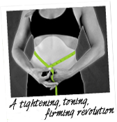

Our Mission:
Our passion is for making a difference in the lives of others, producing the
highest quality products possible, and celebrating the fun in every day! This
passion is called the It Works! Way and it fuels everything we do.
Since 2001,we’ve been helping people change their lives through our innovative
products and amazing business opportunity. We are founded on family values and our
belief in “One Team One Mission” creates a bond between all of us—the corporate
team, valuedLoyal Customers, and hard-working Independent Distributors.
About us:
IT Works! Global offers one-of-a-kind, safe,
effective, and affordable products that will change your life. It Works! products
are formulated by leading scientists, herbalists, and researchers who integrate
innovative technology, strict quality standards, and the finest in diverse, natural
ingredients into their work. The end results? A one-of-a-kind body contouring line,
top-notch nutritional supplements, and a specially formulated skin care line that
safely nourish your body and enhance your life.
Our history:
It Works! was born out of Mark & Cindy Pentecost’s
passion to offer families like yours the opportunity to dream big, to begin living
life in your own terms—because they too had those dreams once themselves.
Long before the founding of It Works! Global, Mark was a high school teacher
and basketball coach in the small town of Allegan, Michigan. Cindy was a
stay-at-home mom with their three children, a job of the utmost importance that
the family took great pride in her doing. They were rich in love and filled with
dreams, but struggling to make ends meet financially.
So Mark & Cindy devised a plan: an extra $500 a month, to be earned through a
home-based business opportunity in the telecommunications industry.
After months of evening hours dedicated to their new side business, the Pentecosts’s
earnings grew far beyond the goal they had originally set. After a few years, Mark
became a top-ten earner in the company, bought the family’s freedom, and began
to dream of the next big challenge: helping other families do the same.
They weren’t sure how they would do it yet, but the seed had been planted for
It Works! Global..
The Ultimate body Applicator:
The biggest challenge in this industry—and really the worldwide market—is to offer
an uncommon solution, a true original, that captivates people and offers them something
they never thought possible before. When we found the Ultimate Body Applicator,
we knew we had something special to share with the world.
- Mark Pentecost, CEO It Works!
Global
To this day, It Works!’ first product is still its most popular: The Ultimate Body Applicator.
The site-specific body contouring treatment has been in the hands of celebrities at
Hollywood events and at the doorsteps of people like you all over the world—exclusively
available through It Works! Global. It all started when Mark Pentecost received
a call from Pam Sowder (now It Works! Chief Networking Officer) raving about a
product that could deliver tightening, toning, and firming results in 45 minutes—an
alternative to the growing trend for more drastic measures like cosmetic surgeries
or constricting shapewear.

When the Pentecosts traveled to try this seemingly unbelievable product, Mark recalls,
I watched my wife try it. She was ecstatic with the results, and I watched her call
her girlfriend right away to tell her what had happened. Her girlfriend said that
she wanted to try it, and they hung up. It wasn't 30 seconds later, her girlfriend
called back and said,
My daughter was listening, and she wants one for her chin.
Is there something for the chin?
That was when I knew that we had a perfect product
for direct selling, a product that people would be excited to share with their
friends and family.
Since then, the Ultimate Body Applicator has become a global phenomenon, and Pam Sowder
now travels all over the world to meet with distributors, give hands-on training and
support, and share the Ultimate Body Applicator.
| What it's good for | Which of our products to use |
|---|---|
| Arthritis | Relief;Ultimate Body Applicator;Defining Gel |
| Stress/Anxiety | Confianza;Greens;It's Vital;Profit |
| Allergies | Greens;Defining Gel |
| Headache/Migraine | Relief;Greens;Confianza |
| Fatigue | Confianza |
{kind=link}
{kind=link}
{kind=link}
{kind=link}
{kind=link}
{kind=link}